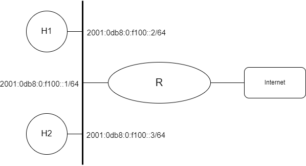
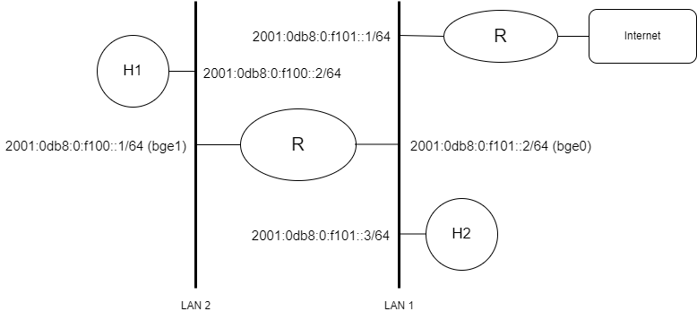

Introdução ao IPv6

Prática de Laboratório 11
Introdução ao IPv6
Introdução
O IPv6 é o sucessor do IPv4 e foi criado para resolver os problemas de escassez de endereços IP que ocorriam no IPv4. Ele fornece uma quantidade praticamente ilimitada de endereços IP, permitindo que as redes cresçam e evoluam de forma mais flexível e escalável. Neste experimento prático, vamos explorar como configurar o IPv6 no sistema operacional Linux através da utilização de comandos e configurações no arquivo interfaces (/etc/network/interfaces).
Objetivos
- Compreender as configurações básicas para navegabilidade em uma rede de computadores utilizando o IPv6.
- Exercitar configurações básicas e entender como usar ferramentas de diagnóstico para validar configurações.
Teoria abordada no experimento
Conceitos básicos do IPv6 e o funcionamento básico de uma rede TCP/IP utilizando o IPv6.
Material Necessário
- Interfaces de rede (NIC's)
- Máquinas com sistema GNU/Linux
- Cabos de rede – par trançado normal
- Switches ou HUBs
- Software nas máquinas: ambiente GNU/Linux básico
- Acesso à Internet – necessário
- Desligar o servidor e cliente DHCP para as máquinas do experimento
Roteiro
1. Montagem de rede interconectada para o experimento
- H1 (2001:0db8:0:f100::2/64), H2 (2001:0db8:0:f100::3/64) e R/eth0 (2001:0db8:0:f100::1/64).

2. Configurar os clientes na rede de testes
2.1 Configuração manual usando ifconfig(8)
Para ver o estado atual da interface de rede que está sendo usada na maquina, execute:
$ ifconfig <interface>
Caso o comando não mostre nenhum endereço IPv6 configurado, pode indicar que o IPv6 esta desabilitado nesta interface. Para verificar se está desabilitado, execute o comando:
$ sysctl -a | grep net.ipv6.conf.<interface>.disable_ipv6
Esse comando irá exibir o valor da configuração net.ipv6.conf.<interface>.disable_ipv6, que controla se o IPv6 está habilitado ou desabilitado para todas as interfaces. Se o valor for 1, significa que o IPv6 está desabilitado, se for 0, significa que o IPv6 está habilitado.
Caso o comando mostre que o IPv6 está desabilitado, adicione a seguinte linha no arquivo sysctl.conf (/etc/sysctl.conf):
net.ipv6.conf.<interface>.disable_ipv6 = 0
Para forçar a mudança, execute:
$ sysctl -p
Após a habilitação, verifique novamente o estado atual da interface de rede. Deverá ser capaz de ver a linha inet6, que será o endereço IPv6 configurado para a interface em questão.
Envie pacotes icmp (ping) para testar a configuração:
$ ping <inet6_address>
Execute o serviço SSH no Debian e faça um teste para verificar se é possível conectar no SSH através do IPv6.
$ ssh -v <inet6_address>
2.2 Endereços Multicast Úteis
Um endereço Multicast identifica um conjunto de interfaces, onde um pacote enviado a um endereço multicast é entregue a todas as interfaces associadas a esse endereço.
A seguir estão representados dois importantes endereços Multicast:
- ff02::1 - endereço multicast de todos os nós da rede no escopo link-local.
- ff02::2 - endereço multicast de todos os roteadores da rede no escopo link-local.
É possível enviar pacotes ICMPv6 para visualizar os nós da rede que estão conectados no mesmo link:
$ ping ff02::1
A partir das informações dadas, faça a mesma coisa para visualizar os roteadores que estão conectados no mesmo link.
2.3 Configuração de host IPv6
No IPv6 é possível configurar mais de um endereço em uma única interface:
$ ifconfig <interface> inet6 fe80::1/64
Envie pacotes icmp (ping) para testar a configuração:
$ ping fe80::1/64
Execute o serviço SSH no Debian e faça um teste para verificar se é possível conectar no SSH através do IPv6.
$ ssh -v <inet6_address>
Para remover um endereço específico, pode-se usar o parâmetro -alias:
$ ifconfig <interface> inet6 fe80::1/64 -alias
2.4 Configuração manual usando o arquivo interfaces
Para configurar o IPv6 no arquivo interfaces (/etc/network/interfaces) utiliza-se o parâmetro iface <interface> inet6 para indicar que a interface <interface> é compatível com IPv6. Na seguinte configuração apenas um endereço de link-local é configurado automaticamente:
auto eth0
iface eth0 inet6 auto_linklocal
Se você quiser adicionar outro endereço de link-local manualmente, você pode adicionar a linha static em iface <interface> inet6.
auto eth0
iface eth0 inet6 static
address fe80::1
netmask 64
Mais endereços podem ainda ser adicionados usando a mesma linha:
auto eth0
iface eth0 inet6 static
address fe80::1
netmask 64
address fe80::2
netmask 64
A partir dos exemplos dados até aqui, configure uma topologia semelhante a apresentada no inicio do experimento. Após configurar os endereços execute o seguinte comando para reconfigurar a interface:
$ ifdown <interface> && ifup <interface>
3. Validando as configurações
Confira a conectividade básica enviando pacotes ICMPv6 para algum outro computador que esteja conectado à mesma rede:
$ ping <inet6_address>
Como proceder para configurar o esquema de resolução de nomes?
4. Internet em IPv6
4.1 Configuração manual
Ao configurar e validar uma topologia semelhante a apresentada no inicio do experimento, pode ter ficado a duvida de como acessar destinos fora da rede local. Para que isso seja possível primeiro é necessário adicionar a seguinte linha ao arquivo interfaces (/etc/network/interfaces):
auto eth0
iface eth0 inet6 static
address fe80::1
netmask 64
gateway 2001:0db8:0:f100::1
Esta variável especifica o roteador padrão.
Caso você não saiba o endereço ipv6 do seu roteador você pode executar comandos que foram explicados anteriormente neste experimento. Tente!
Após especificar o roteador padrão no arquivo é necessário reconfigurar a interface através do utilitário ifconfig, ja apresentado no presente experimento.
Verifique o estado atual da interface de rede:
$ ifconfig <interface>
Após configurado o endereço padrão do roteador você pode enviar pacotes ICMPv6 através da internet:
$ ping www.debian.org
Observe que a resolução de nomes de domínio DNS é executada pelos servidores de nomes listados em resolv.conf (/etc/resolv.conf). Se o seu roteador IPv6 funcionar como um proxy DNS, você pode colocar o endereço IPv6 assim:
nameserver <inet6_address>
4.2 Configuração automática de endereço global (SLAAC)
O IPv6 possui recursos de configuração automática de endereço através de mensagens RA do roteador (protocolo NDP). É possível configurar um endereço IPv6 automaticamente, caso o seu roteador ofereça suporte às mensagens RA.
Para verificar se o seu roteador IPv6 oferece suporte a mensagens RA, você pode usar o utilitário ping6 no endereço de multicast. O comando envia um pacote ICMPv6 para o endereço de multicast na interface definida e se o roteador suporta RA, ele deve responder.:
$ ping6 -I eth0 ff02::1%eth0
Caso a resposta contenha o endereço do roteador, significa que é possível utilizar a configuração automática. No arquivo sysctl.conf (/etc/sysctl.conf) atualizar o valor da variável net.ipv6.conf.<interface>.accept_ra:
$ net.ipv6.conf.all.accept_ra=<value>
Onde <value> é um número inteiro que representa o valor de configuração. O valor padrão é 2, que significa que as mensagens RA são aceitas, mas somente se o endereço IPv6 de link-local já foi configurado manualmente.
Verifique o estado atual da interface de rede:
$ ifconfig <interface_nome>
A palavra-chave autoconf deve ser mostrada logo após o endereço.
6. Configuração de um roteador IPv6
A topologia a seguir mostra um exemplo de um rede que possui um roteador IPv6 para ter duas redes independentes. A LAN 1 e a LAN 2 são conectadas entre si pelo roteador, e outro roteador oferece acessibilidade à Internet IPv6.
- H1 (2001:0db8:0:f100::2/64) e R/bge1 (2001:0db8:0:f100::1/64).
- H2 (2001:0db8:0:f101::3/64), R/bge0 (2001:0db8:0:f101::2/64) e R (2001:0db8:0:f101::1/64)

Para habilitar o encaminhamento de pacotes, é necessário que a variável net.ipv6.conf.all.forwarding esteja ativa. Você deve editar o arquivo sysctl.conf (/etc/sysctl.conf) e adicionar ou modificar a seguinte linha:
net.ipv6.conf.all.forwarding=1
Assumindo que bge0 e bge1 são as interfaces de rede do roteador para LAN 1 e LAN 2 respectivamente, o arquivo interfaces (/etc/network/interfaces) ficara semelhante a isso:
auto bge0
iface bge0 inet6 static
address 2001:0db8:0:f101::2
netmask 64
gateway fe80::5a52:8aff:fe10:e323
auto bge1
iface bge1 inet6 static
address 2001:0db8:0:f100::1
netmask 64
gateway fe80::5a52:8aff:fe10:e323
A interface que conecta a LAN 1 (bge0) não tem conhecimento da rota para a interface da LAN 2 (bge1). Por isso, é necessário adicionar uma configuração de rota estática nela usando um endereço de link-local da interface bge1.
$ ip -6 route add 2001:0db8:0:f100::1/64 dev bge1
Verifique se a rota foi adicionada com sucesso.
$ ip route show
Porém, o roteador Debian ainda não habilitou o envio de mensagens RA, para configuração automática de hosts na rede. Para enviar mensagens RA, você precisa editar o arquivo sysctl.conf (/etc/sysctl.conf) e adicionar ou modificar a seguinte linha:
net.ipv6.conf.all.send_redirects=1
Configure H1 para utilizar a configuração automática de endereço e verifique se está tudo ocorrendo da maneira correta.
7. Usando DHCPv6
O tipo de configuração apresentado na etapa 4.2 é algo mais próximo do DHCP no IPv4. No entanto, você não pode controlar qual endereço está realmente configurado em cada host porque eles são gerados a partir dos endereços MAC. Para um controle mais refinado da configuração automática de endereço, você precisará de outro método, como DHCPv6.
Para configurar um host em uma rede que utiliza o DHCPv6, edite o arquivo interfaces (/etc/network/interfaces):
iface eth0 inet6 dhcp
Verifique o estado atual da interface de rede:
$ ifconfig <interface>
Para verificar se o endereço foi dinamicamente atribuído através do DHCPv6, execute:
$ ip -f inet6 addr show
Caso apareça a palavra dynamic ao lado do endereço IPv6 significa que o host foi configurado através do DHCPv6.
Procure saber sobre a configuração de um servidor DHCPv6 utilizando o Debian.
Questões para Estudo
- Em certo momento do experimento, bastou apenas mudar o valor da variável net.ipv6.conf.<interface>.disable_ipv6 para que um IPv6 fosse configurado. Por que ocorreu isso e como desativar essa configuração automática?
- O que é StateLess Address AutoConfiguration (SLAAC) e qual sua utilidade na atribuição de endereços IPv6?
- Explique os tipos de endereço IPv6 e seus respectivos prefixos?
- Para acessar a internet por meio do IPv4 é necessário o uso do NAT. No IPv6 também é necessário? Explique.
- Um roteador pode ser configurado usando o recurso de configuração automática? Explique.
- Como funciona a configuração automática de endereço através do protocolo NDP?
- Em vários momentos do experimento foi omitido a parte do identificador de zona e isso pode ter causado problemas. O que é o identificador de zona e por que é necessário ele em um endereço de IPv6?
Referências Bibliográficas
SATO, Hiroki. Pragmatic IPv6 (Part 1). FreeBSD Journal, 2022. Disponível em: https://freebsdfoundation.org/wp-content/uploads/2022/06/hiroki_IPv6.pdf. Acesso em: 20 dez. 2022.
SATO, Hiroki. Pragmatic IPv6 (Part 2). FreeBSD Journal, 2022. Disponível em: https://issue.freebsdfoundation.org/publication/?m=33057&i=759043&p=1&ver=html5. Acesso em: 20 dez. 2022.
Ipv6.br. Endereçamento. IPv6, 2012. Disponível em: https://ipv6.br/post/enderecamento/. Acesso em: 20 dez. 2022.
NICbrvideos. IPv6 no Café da Manhã - 01 de 03 - Planejamento e Endereçamento de Redes IPv6. YouTube, 27 de jun. de 2013. Disponível em: https://www.youtube.com/watch?v=rWVm9JCR4Fc. Acesso em: 20 dez. de 2022.
NICbrvideos. IPv6 no Café da Manhã - 02 de 03 - Planejamento e Endereçamento de Redes IPv6. YouTube, 27 de jun. de 2013. Disponível em: https://www.youtube.com/watch?v=COblHE5hpfg. Acesso em: 20 dez. de 2022.
NICbrvideos. IPv6 no Café da Manhã - 03 de 03 - Planejamento e Endereçamento IPv6. YouTube, 27 de jun. de 2013. Disponível em: https://www.youtube.com/watch?v=lRty4OlZWjA. Acesso em: 20 dez. de 2022.
WETHERALL, D. J; TANENBAUM, A. S. Computer networks. Pearson Education, 2013.
LUCAS, M. W. Networking for Systems Administrators. 5th. ed. USA: Tilted Windmill Press, 2019.